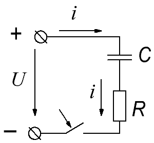
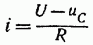
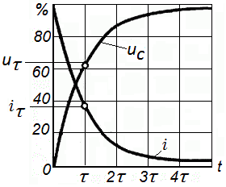
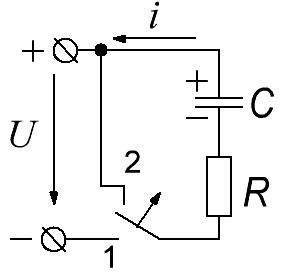
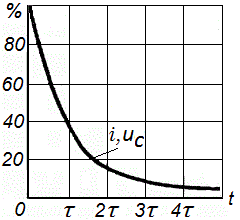

Зарядка и разряд конденсатора
Зарядка конденсатора
Присоединим цепь, состоящую из незаряженного конденсатора емкостью С и резистора с сопротивлением R, к источнику питания с постоянным напряжением U (рис. 1).

Так как в момент включения конденсатор еще не заряжен, то напряжение на немuc= 0. Поэтому в цепи в начальный момент времени (t=0) падение напряжения на сопротивлении R равно U и возникает ток, сила которого
i=U/R
Прохождение тока i сопровождается постепенным накоплением заряда Q на конденсаторе, на нем появляется напряжение uc= Q/C и падение напряжения на сопротивлении R уменьшается:
iR = U - uc,
как и следует из второго закона Кирхгофа. Следовательно, сила тока

уменьшается, уменьшается и скорость накопления заряда Q, так как ток в цепи
i=dQ/dt
С течением времени конденсатор продолжает заряжаться, но заряд Q и напряжение на нем ucрастут все медленнее (рис. 2), а сила тока в цепи постепенно уменьшается пропорционально разности - напряжений U - uc

Через достаточно большой интервал времени (теоретически бесконечно большой) напряжение на конденсаторе достигает величины, равной напряжению источника питания, а ток становится равным нулю — процесс зарядки конденсатора заканчивается.
Практически принято считать, что процесс зарядки закончился, когда ток уменьшился до 1% — начального значения U/R или, - что то же, когда напряжение на конденсаторе достигло 99% напряжения источника питания U.
Процесс зарядки конденсатора тем продолжительней, чем больше сопротивление цепи R, ограничивающее силу тока, и чем больше емкость конденсатора С, так как при большой емкости должен накопиться больший заряд. Скорость протекания процесса характеризуют постоянной времени цепи
τ = RC
чем больше τ, тем медленнее процесс.
Постоянная времени цепи имеет размерность времени, так как
[τ] = [RC] = Ом·Кл/ В = Ом·А·с / В = с
Через интервал времени с момента включения цепи, равный τ, напряжение на конденсаторе достигает примерно 63% напряжения источника питания, а через интервал 5τ процесс зарядки конденсатора можно считать закончившимся.
Напряжение на конденсаторе при зарядке
uc = U - Ue-t/τ =U(1 - e-t/τ)
т. е. оно равно разности постоянного напряжения источника питания и свободного напряжения Ue-t/τ убывающего с течением времени по закону показательной функции от значения U до нуля (рис. 2).
Зарядный ток конденсатора:
ic = U/R·e-t/τ =Ie-t/τ
Ток ic от начального значения I = U / R постепенно уменьшается по закону показательной функции (рис. 2).
Разряд конденсатора
Рассмотрим теперь процесс разряда конденсатора С, который был заряжен от источника питания до напряжения U через резистор с сопротивлением R (рис. 3, где переключатель переводится из положения 1 в положение 2).


В начальный момент, в цепи возникнет ток i = U/R = I и конденсатор начнет разряжаться, а напряжение на нем уменьшаться. По мере уменьшения напряжения uc будет уменьшаться и ток в цепи i = uc/ R (рис. 4). Через интервал времени 5τ = 5RC напряжение на конденсаторе и ток цепи уменьшатся при мерно до 1% начальных значений и процесс разряда конденсатора можно считать закончившимся.
Напряжение на конденсаторе при разряде:
uc = Ue-t/τ
т. е. уменьшается по закону показательной функции (рис. 4).
Разрядный ток конденсатора
ic = -uc/R = -Ie-t/τ
т. е. он, так же как и напряжение, уменьшается по тому же закону (рис. 4).
Вся энергия, запасенная при зарядке конденсатора в его электрическом поле, при разряде выделяется в виде тепла в сопротивлении R.
Электрическое поле заряженного конденсатора, отсоединенного от источника питания, не может долго сохраняться неизменным, так как диэлектрик конденсатора и изоляция между его зажимами обладают некоторой проводимостью.
Разряд конденсатора, обусловленный несовершенством диэлектрика и изоляции, называется саморазрядом. Постоянная времени при саморазряде конденсатора τ не зависит от формы обкладок и расстояния между ними.
Процессы зарядки и разряда конденсатора называются переходными процессами.